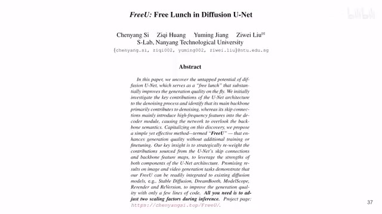
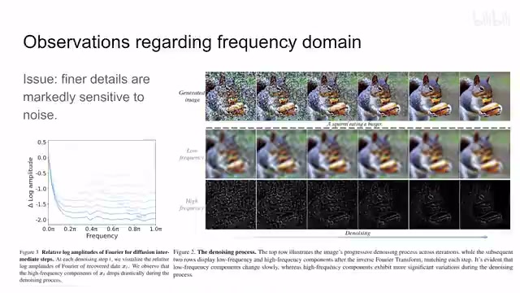
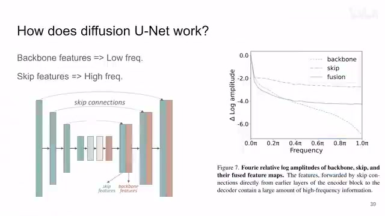
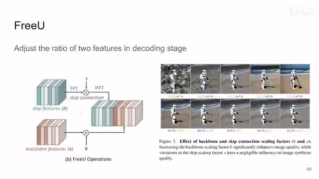
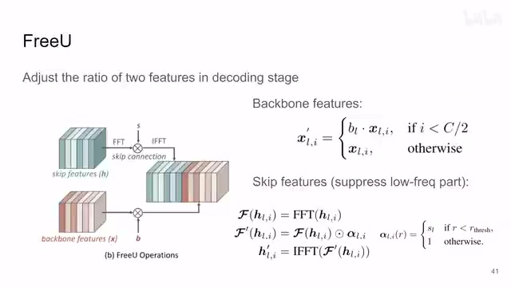
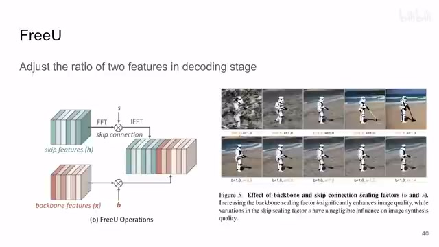
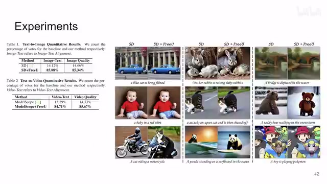
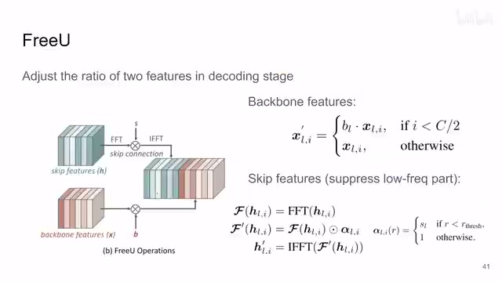

← 返回阅读库 · 原论文目录
论文讲解阅读文档 · 内容生成 · v015
FreeU Free Lunch in Diffusion U-Net[2309.11497]
视频时长 00:04:52；讲解文字 2,257 字符；提取讲解画面 9 张。按视频原顺序阅读，每段文字保留时间戳。
文字来自整段视频的自动语音转写，按自然停顿分段，并与 PPT / 论文页面 / 演示画面对齐。未将讲解压缩为摘要；术语、数字和口述公式请结合画面及原论文核对。 阅读稿已校正规范部分明确术语误识别；原始逐字稿和每处修改记录另行保留。
讲解画面为源视频截图（640×360），不是可编辑 PPT 文件。全片按每秒 2 帧扫描内容变化，逐步展开页保留；连续动画保留代表画面。清晰度受源视频限制。
下载完整资料包 · 含离线 HTML、PDF、Word、全部 PPT 画面和字幕。
原论文与材料
FreeU: Free Lunch in Diffusion U-Net · 下载完整 PDF（12 页）
按时间阅读
00:00:00–00:00:21 · 画面 001

00:00:00–00:00:21 · 画面 001大家好啊，今天我们来快速说一篇论文 FreeU: Free Lunch in Diffusion U-Net。那这篇论文呢，就是非常简单的通过调整 U-Net 里面两个分支，就是你的 skip connection 和你的 backbone connection 这两个分支的权重，来达到一个改善 stable diffusion 也好，各种 diffusion model 它们生成图像质量的这么一个效果。
00:00:21–00:01:20 · 画面 002

00:00:21–00:01:20 · 画面 002那么作者在做这些之前呢，首先他有一个观察，就是我们在生成图像的时候，从 random noise 到真正的图像，它在频域会发生什么事情呢？那我们来看到这个图啊，这个横轴是频率，那纵轴呢是相对于基频的这个 amplitude。那我们来看到刚开始做 diffusion 的时候呢，这些高频的信息是很高的，那随着你的 diffusion 不断的进行，你最后高频的信息呢就逐渐的下来了。
我们大部分能量都集中在了低频的区域。那么当然这个是符合直觉的，毕竟你的图像相对于 random noise 来讲，它肯定是相对平滑的。但是我们的图像也不是一点高频信息都没有，比如说你像边缘，像纹理这种东西，它就是高频的。那么我们随着 denoise 的过程中不断的把这些高频的信息去掉，那么作者认为说这些。更详细的细节，这些高频的信息可能就在这个 denoise 的过程中被一同当作 noise 给它处理掉了。那么这个呢是作者的一个观察还有他的猜测。那么在这之上呢，作者就开始研究了，我们在使用 unet 做 denoising 的时候，它具体发生了什么事呢？这里呢他拿到一个 unet，我们来看到在 decode 的阶段里的 feature 包括 skip connection 过来的这个 skip feature。
00:01:20–00:02:19 · 画面 003

00:01:20–00:02:19 · 画面 003还有这个 backbone feature，就是你一路一路 convolution 过来的，那这个叫 backbone feature。那么对于这样路 feature，作者把它做傅里叶变换，然后呢在频域里面一分析发现，那这个 skip feature 它更多的是保留了高频的信息，那这个 backbone 呢，这个高频信息保留的就比较少了。那么这两个 feature 一合起来，最终呢。
它就是这样一个曲线。那通过这样一组实验呢，作者就确信了说，我们的 backbone feature 来处理低频的部分，那这个 skip connectionsskip features 来处理这些高频的部分。那这其实是一个非常好的性质，就是红豆绿豆放到锅里一起炒，炒完之后倒到盘里来，红豆绿豆自然分开这样一种状态。那么在这个基础上呢，作者就可以对这个频率的这些响应做一些更细致的调整。
00:02:19–00:02:32 · 画面 004

00:02:19–00:02:32 · 画面 004那么我们来看到本文作者提出的方法，这个 freeU 就是在 decode 阶段，我们不是直接的把 skip feature 和 backbone feature 直接串接起来做下一步，不是这样搞，而是我们对它们做一定的调制。那么这里对于 backbone feature 来说，就是直接一个数乘到原来的 feature 上面，这个 C 就是总的 channel 的数量，那么小于前一半就是 backbone feature 就是这一块，这个 L 是 decoder 层数。
00:02:32–00:03:22 · 画面 005

00:02:32–00:03:22 · 画面 005那么这个呢是 backbone feature对于 skip connection skip feature 呢这里呢，作者主要是抑制了。它的低频的部分你可以看到首先呢，作者把它变到了。这个频域里面做这个 FFT 变到频域里面。乘上了这样一个 mask然后呢再逆变换回来。那么这个 mask 呢它其实是一个圆在和中心一定距离的。
这些像素上乘上一个值。那其他的值呢就相对较远的这些高频的位置呢。就保持不变那么这样的一个设计呢。又通过两个参数把我们这个 skip feature和 backbone feature它们两个的权重给它控制起来了那么在这个基础上呢。作者做实验发现如果增加 backbone 的权重
00:03:22–00:03:42 · 画面 006

00:03:22–00:03:42 · 画面 006图像的质量会逐渐的变高。那当然也会变得更平滑嘛。但是如果我逐渐增加。这个 skip feature它的权重看起来呢对图像的质量生成的质量本身没有变化那么基于这样的观察呢。你就可以去调整这些权重。最终达到一个让人满意的出图的效果。那么这个图像呢
00:03:42–00:04:16 · 画面 007

00:03:42–00:04:16 · 画面 007我们来看到实验部分。这里呢作者直接找了 35 个人。然后呢让他们来选就是标准的 stable diffusion 和加上本文的 free U 这两个图出来之后，哪个图更好一点，一个是从图像文本的描述的对应上，再就是这个图像质量上。那么大部分的人都选择了本文的方法，包括 video 也是，但是其实这里严格来说最好还是有一个第三个选项，就是两个效果都不怎么样或者之类的这样的选项，出来的结果应该是更严谨的。
那么这边呢是作者提供了一些样例在原文中呢也有很多的样例那么总的来说呢这一篇呢是通过非常简单的更改 unet 里面 decoder 两个分支它们的权重来达到改善生成图像质量的这个目的但是呢其实这篇文章有很多的细节在文章中并没有说明比如说这个权重该怎么选为什么使用了这样一个圆形的 mask 这个半径选多少等等等等那么这些呢作者说这周会公布代码那么希望呢这些问题呢
00:04:16–00:04:51 · 画面 008

00:04:16–00:04:51 · 画面 008能够随着代码的出现呢而得到一一解答同时呢我也是很期待能够看到一个更详细的 ablation 好的那么以上就是我对这篇文章的一个快速的整理那么感谢您的收看再见
00:04:51–00:04:52 · 画面 009
00:04:51–00:04:52 · 画面 009转写与来源说明 · 2 个自动复核提示
保留 57 个原始语音片段，2 个片段触发自动复核提示。提示仅用于定位可能的术语、重复或识别问题，不等于已确认错误。
讲解画面为源视频截图（640×360），不是可编辑 PPT 文件。全片按每秒 2 帧扫描内容变化，逐步展开页保留；连续动画保留代表画面。清晰度受源视频限制。
原视频：paper/合集_2026-10-16_内容生成/[论文速览]FreeU Free Lunch in Diffusion U-Net[2309.11497].mp4
SHA-256：b682bba1a58fc72256bdfe74125e2c2077106b84b075549fad06a963d9d30c27
那么这个呢是 backbone feature
和 backbone feature
全文按视频语音与画面制作。原论文可从上方链接下载；完整资料包保留全文、原始逐字稿、字幕和校对记录。